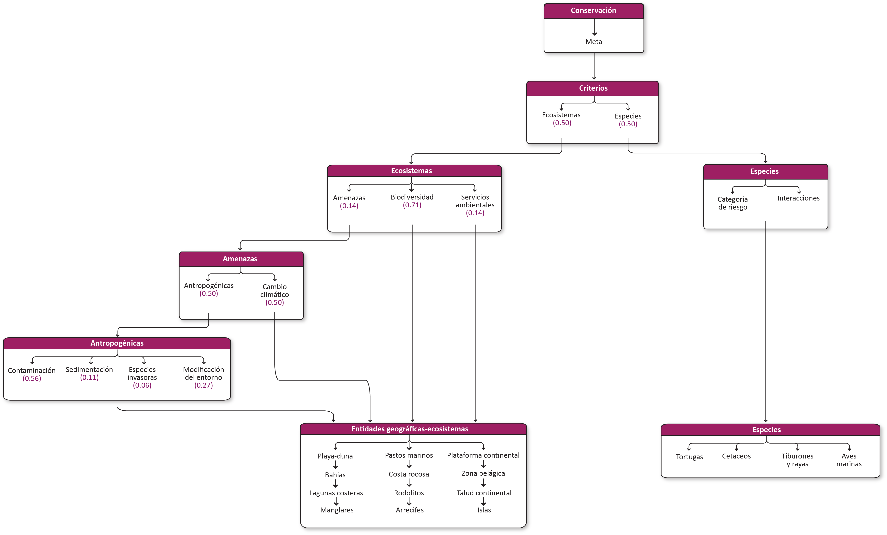
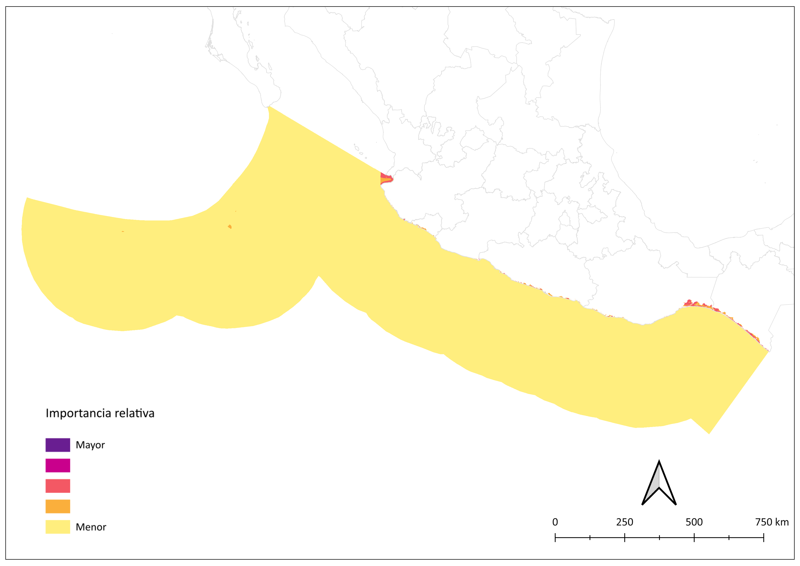
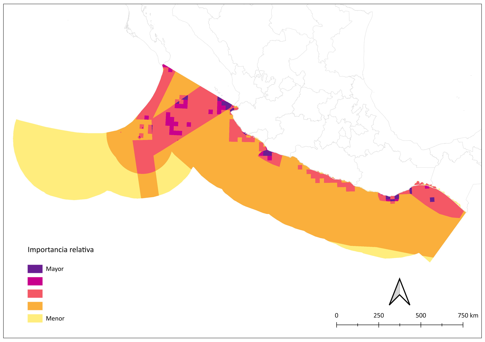
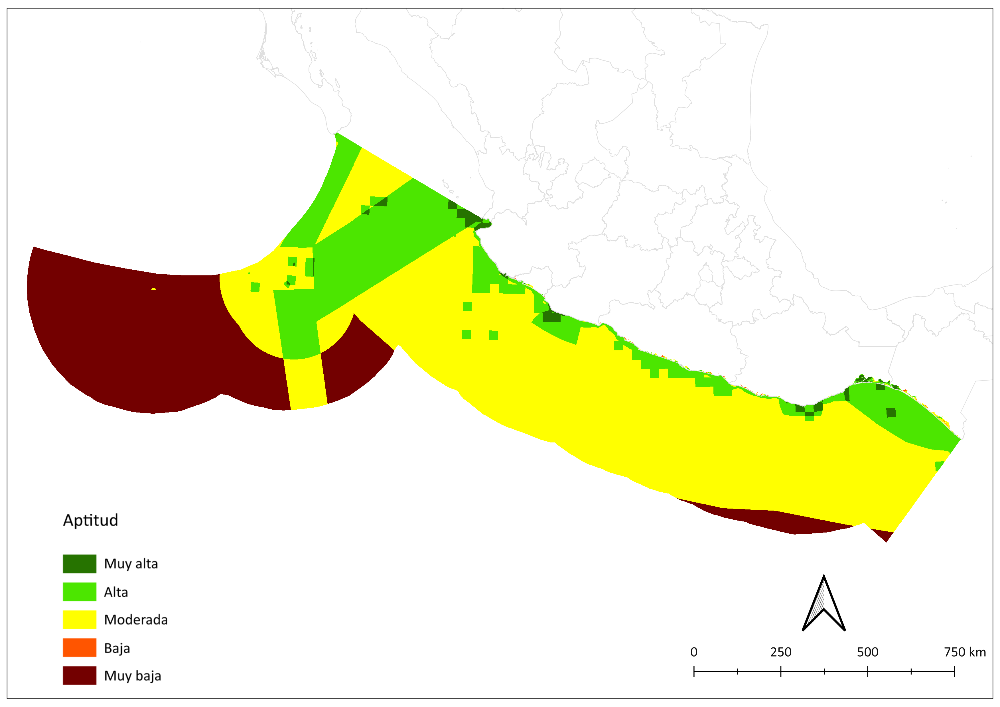
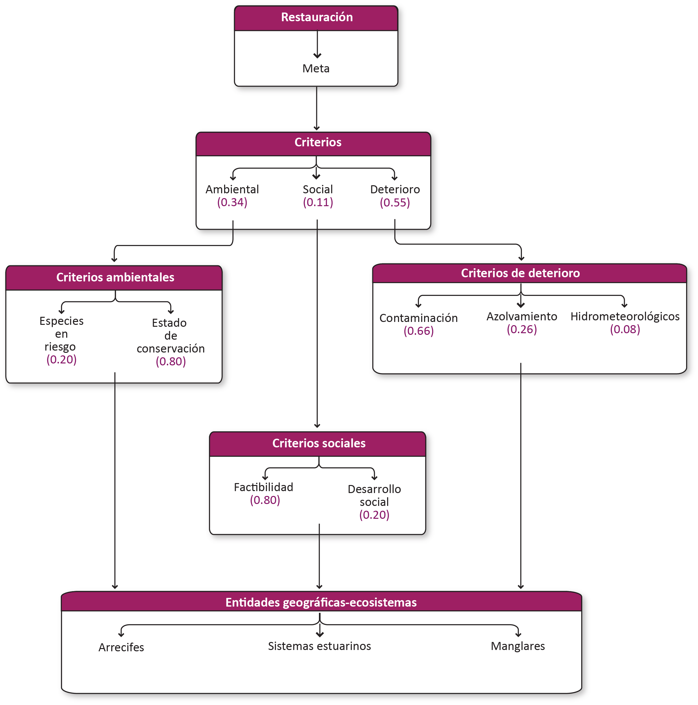
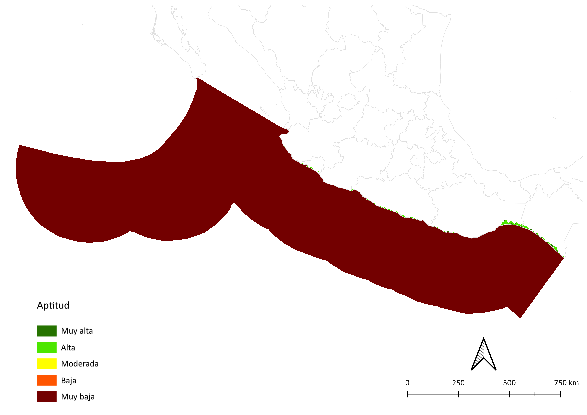

Conservación.
Meta
El mantenimiento de procesos que garantizan la conservación y restauración de los ecosistemas marinos y costeros, su biodiversidad y los servicios ecosistémicos que prestan desde una perspectiva socio-ecológica, así como el incremento de la resiliencia ante el cambio climático de los ecosistemas y las comunidades costeras y el desarrollo sostenible de la región, a través de mecanismos de gobernanza. La perspectiva socio-ecológica debe integrar (1) el fortalecimiento de medios y modos de vida que son garantes del mantenimiento de los sistemas socio-ecológicos, (2) el índice de desarrollo humano, (3) la interacción entre conservación y economía, (4) las buenas prácticas ambientales y sociales, (5) la participación de las comunidades locales, indígenas y afromexicanas, (6) el registro y consideración de saberes, (7) la consideración del contexto sociocultural, (8) la seguridad alimentaria, (9) la justicia y (10) la perspectiva de género.
Contar con la mejor información disponible con propósito de definir unidades de conservación, para lo cual se deberán llevar a cabo investigación para la detección, caracterización y clasificación de hábitat marinos.
Fortalecer aspectos de la gobernanza, incluyendo: (1) el cumplimiento de los acuerdos internacionales, (2) el decreto de nuevas ANP y la implementación de otros instrumentos de conservación, reservas de pesca comunitaria y sitios RAMSAR, (3) la vigilancia y las sanciones de los delitos ambientales, (4) el monitoreo de los ecosistemas, (5) la colaboración entre los 3 órdenes de gobierno, OSC, ciudadanía y academia, (6) la aplicación del principio precautorio, (7) el manejo integrado de cuencas y (8) la atención de los vacíos en el marco legal.
Minimizar las amenazas a la biodiversidad por diversos factores, que incluyen: (1) la mortalidad incidental de megafauna, (2) la contaminación, (3) la introducción de especies invasoras, (4) el desarrollo actividades no sostenibles (tránsito marítimo, pesca, minería, turismo, etc.) y los efectos del cambio climático.
1. Conservación
1.1 Modelo de decisión

1.2 Insumos
Arrecifes
Capa | Mexican Reefs Data
Fuente | Ortiz-Lozano, Leonardo; Santander-Monsalvo, Jacobo; espejel, ileana (2018), “Mexican Reefs Data”, Mendeley Data, V1, doi: 10.17632/dmfmv4b396.1
Año | 2018
Escala | Sin dato
Variable | ID / Reef Name
Unidades | UTM WGS 84
Bahías
Capa | Marco Geoestadístico municipal 2023
Fuente | INEGI
Año | 2023
Escala | 1:250000
Variable |
Unidades | Adimensional
Liga |
Islas
Capa | Línea de Costa de México en función del relieve 2023
Fuente | INEGI
Año | 2024
Escala |
Variable |
Unidades | ITRF92
Liga | Publicaciones y mapas
Manglar
Capa | Distribución de manglares y manglares perturbados en México 2020
Fuente | CONABIO
Año | 2020
Escala | 1: 50,000
Variable |
Unidades | Adimensional
Liga |
Zona pelágica, plataforma y talud continental
Capa | Geomorfología marina
Fuente | Lugo-Hubp, José., Córdova, Carlos-Fernández, Arteaga. (1990)
Año | 1990
Escala | 1:4000000
Variable | Geomor_Mar
Unidades | Adimensional
Liga | http://www.conabio.gob.mx/informacion/gis/?vns=gis_root/topog/marino/geom4mgw
Aves
Capa |
Fuente | CIPAMEX (CONABIO), (17/07/2015). “Áreas de importancia para la conservación de las aves, 2015”, escala: 1:250000. Sección Mexicana del Consejo Internacional para la Preservación de las Aves. Financiado por CONABIO-FMCN-CCA. Comisión Nacional para el Conocimiento y Uso de la Biodiversidad, México, D.F.. México, D.F..
Año | 2015
Escala | 1:250000
Variable |
Unidades |
Liga | http://www.conabio.gob.mx/informacion/gis/?vns=gis_root/region/biotic/aicas15gw
Cetáceos
Capa | Avistamiento de cetáceos - áreas de distribución espacial relativa
Fuente | Luis Medrano,
Año | 1981 - 2019
Escala | 0.25° x 0.25°
Variable | Adimensional
Unidades |
Liga |
Tortugas
Capa | Especies amenazadas de preocupación común, 2008
Fuente | CommonConservartion Concern, 2008
Año | 2008
Escala | S/N
Variable | Green turtle / Kemp’s ridley turtle / Leatherback turtle / Loggerhead turtle
Unidades | EPSG: 2163 US National Atlas Equal Area (metros)
Liga | http://www.cec.org/es/atlas-ambiental-de-america-del-norte/especies-marinas-amenazadas-de-preocupacion-comun/
Tiburones y rayas
Capa |
Fuente | IUCN SSC Shark Specialist Group. 2023. Gulf of California-Revillagigedo-Clipperton Migration Corridor ISRA Factsheet. Dubai: IUCN SSC Shark Specialist Group.
Año | 2023
Escala |
Variable |
Unidades |
Liga |
Peces
Capa | Base de datos de sitios de observación de peces
Fuente | Georgina Ramirez
Año | 1984 - 2022
Escala | Sin dato
Variable |
Unidades | Adimensional
Liga |
1.2 Criterios
1.3.1 Criterios de evaluación de ecosistemas
1.3.1.1 Biodiversidad
Importancia relativa de las entidades cartográficas o ecosistemas marinos y costeros respecto a su diversidad de especies.
Parámetros para la función de valor
| Entidades geográficas - ecosistemas | Importancia | Valor |
|---|---|---|
| Islas | Alta | 0.75 |
| Arrecife | Muy alta | 1.00 |
| Lagunas costeras | Alta | 0.75 |
| Playa-dunas | Moderada | 0.5 |
| Manglares | Muy alta | 1.00 |
| Pastos marinos | Moderada | 0.5 |
| Bahías | Alta | 0.75 |
| Plataforma continental | Alta | 0.75 |
| Zona Pelágica | Moderada | 0.5 |
| Talud continental | Moderada | 0.5 |
Función de valor de Biodiversidad
1.3.1.2 Servicios ambientales
Importancia relativa de las entidades cartográficas o ecosistemas marinos y costeros respecto a los servicios ambientales de provisión, regulación, culturales y soporte que prestan.
Parámetros para la función de valor
| Entidades geográficas - ecosistemas | Importancia | Valor |
|---|---|---|
| Islas | Moderada | 0.50 |
| Arrecife | Muy alta | 1.00 |
| Lagunas costeras | Alta | 0.75 |
| Playa-dunas | Alta | 0.75 |
| Manglares | Muy alta | 1.00 |
| Pastos marinos | Moderada | 0.50 |
| Bahías | Alta | 0.75 |
| Plataforma continental | Moderada | 0.50 |
| Zona Pelágica | Moderada | 0.50 |
| Talud continental | Moderada | 0.50 |
Función de valor de Servicios ambientales
1.3.1.3 Amenazas
1.3.1.3.1 Cambio climático
Importancia relativa de las entidades cartográficas o ecosistemas marinos y costeros respecto a las amenazas derivadas de los efectos del cambio climático, incluyendo (1) el aumento en el número e intensidad de las tormentas, (2) aumento en el nivel del mar, (3) aumentos en la temperatura del mar, (4) aumento en la acidificación, (5) cambios en corrientes, (6) cambios en la línea de costa, (7) cambios en la productividad y (8) cambios en la sedimentación biogénica.
Parámetros para la función de valor
| Entidades geográficas - ecosistemas | Importancia | Valor |
|---|---|---|
| Islas | Alta | 0.75 |
| Arrecife | Muy alta | 1.00 |
| Lagunas costeras | Alta | 0.75 |
| Playa-dunas | Alta | 0.75 |
| Manglares | Muy alta | 1.00 |
| Pastos marinos | Moderada | 0.50 |
| Bahías | Alta | 0.75 |
| Plataforma continental | Moderada | 0.50 |
| Zona Pelágica | Moderada | 0.50 |
| Talud continental | Moderada | 0.50 |
Mapa función de valor de Cambio climático
1.3.1.3.1 Antropogénicas
1.3.1.3.1.1 Contaminación
Importancia relativa de las entidades cartográficas o ecosistemas marinos y costeros respecto a las amenazas derivadas del ingreso de elementos físicos, químicos o biológicos que causan desequilibrio ecológico o degradación.
Parámetros para la función de valor
| Entidades geográficas - ecosistemas | Importancia | Valor |
|---|---|---|
| Islas | Moderada | 0.50 |
| Arrecife | Muy alta | 1.00 |
| Lagunas costeras | Muy alta | 1.00 |
| Playa-dunas | Alta | 0.75 |
| Manglares | Muy alta | 1.00 |
| Pastos marinos | Moderada | 0.50 |
| Bahías | Alta | 0.75 |
| Plataforma continental | Moderada | 0.50 |
| Zona Pelágica | Moderada | 0.50 |
| Talud continental | Moderada | 0.50 |
Función de valor de Contaminación
1.3.1.3.1.2 Sedimentación
Importancia relativa de las entidades cartográficas o ecosistemas marinos y costeros respecto a las amenazas derivadas del aporte de sedimentos por efecto de actividades humanas en la costa provocada por la deforestación, erosión por desarrollo de infraestructura, entre otros.
Parámetros para la función de valor
| Entidades geográficas - ecosistemas | Importancia | Valor |
|---|---|---|
| Islas | Moderada | 0.50 |
| Arrecife | Muy alta | 1.00 |
| Lagunas costeras | Muy alta | 1.00 |
| Playa-dunas | Alta | 0.75 |
| Manglares | Alta | 0.75 |
| Pastos marinos | Alta | 0.75 |
| Bahías | Alta | 0.75 |
| Plataforma continental | Moderada | 0.50 |
| Zona Pelágica | Moderada | 0.50 |
| Talud continental | Baja | 0.25 |
Función de valor de Sedimentación
1.3.1.3.1.3 Modificación del entorno
Importancia relativa de las entidades cartográficas o ecosistemas marinos y costeros respecto a las amenazas derivadas de modificaciones por cambios de uso de suelo, relleno de áreas inundables, ganancia de terreno al mar, fractura de estructuras arrecifales, formación de canales, modificaciones en patrones de infiltración, cambios en la línea de costa, efectos de la minería, entre otros.
Parámetros para la función de valor
| Entidades geográficas - ecosistemas | Importancia | Valor |
|---|---|---|
| Islas | Moderada | 0.50 |
| Arrecife | Muy alta | 1.00 |
| Lagunas costeras | Muy alta | 1.00 |
| Playa-dunas | Alta | 0.75 |
| Manglares | Muy alta | 1.00 |
| Pastos marinos | Moderada | 0.50 |
| Bahías | Alta | 0.75 |
| Plataforma continental | Moderada | 0.50 |
| Zona Pelágica | Moderada | 0.50 |
| Talud continental | Baja | 0.25 |
Función de valor de Modificación del entorno

1.3.1.3.1.4 Especies invasoras
Importancia relativa de las entidades cartográficas o ecosistemas marinos y costeros respecto a las amenazas derivadas de la introducción de especies exóticas que causan daños al ecosistema, a las especies nativas, a la salud o a la economía.
Parámetros para la función de valor
| Entidades geográficas - ecosistemas | Importancia | Valor |
|---|---|---|
| Islas | Alta | 0.75 |
| Arrecife | Muy alta | 1.00 |
| Lagunas costeras | Muy alta | 1.00 |
| Playa-dunas | Moderada | 0.50 |
| Manglares | Alta | 0.75 |
| Pastos marinos | Baja | 0.25 |
| Bahías | Alta | 0.75 |
| Plataforma continental | Moderada | 0.50 |
| Zona Pelágica | Moderada | 0.50 |
| Talud continental | Baja | 0.25 |
Función de valor de Especies invasoras
1.3.2 Criterios de evaluación de especies
1.3.2.1 Categoría de riesgo
Importancia relativa de taxa prioritarios (tiburones y rayas, tortugas marinas, aves marinas, peces y cetáceos) respecto a su estatus de riesgo de extinción.
Parámetros para la función de valor
| Especies | Importancia | Valor |
|---|---|---|
| Aves marinas | Moderada | 0.50 |
| Cetáceos | Alta | 0.75 |
| Tortugas | Alta | 0.75 |
| Tiburones y rayas | Alta | 0.75 |
| Peces | Moderada | 0.50 |
Función de valor de Categoría de riesgo

1.3.2.2 Interacciones
Importancia relativa de taxa prioritarios (tiburones y rayas, tortugas marinas, aves marinas, peces y cetáceos) respecto amenazas derivadas de interacciones con actividades productivas, incluyendo pesca incidental, colisiones con embarcaciones, sobrepesca.
Parámetros para la función de valor
| Especies | Importancia | Valor |
|---|---|---|
| Aves marinas | Moderada | 0.50 |
| Cetáceos | Alta | 0.75 |
| Tortugas | Alta | 0.75 |
| Tiburones y rayas | Alta | 0.75 |
| Peces | Alta | 0.75 |
Función de valor de Interacciones
1.4 Mapa de aptitud objetivo de conservación

2. Restauración
2.1 Modelo de decisión

2.2 Insumos
2.3 Criterios
2.3.1 Criterios de deterioro
2.3.1.1 Contaminación
Importancia relativa de los ecosistemas marinos y costeros para su restauración, respecto al deterioro provocado por la contaminación.
Parámetros para la función de valor
| Entidades geográficas - ecosistemas | Importancia | Valor |
|---|---|---|
| Arrecife | Alta | 0.75 |
| Manglares | Alta | 0.75 |
| Sistemas estuarinos | Muy alta | 1.00 |
Función de valor de Contaminación

2.3.1.2 Azolvamiento
Importancia relativa de los ecosistemas marinos y costeros para su restauración, respecto al deterioro provocado por el azolvamiento.
Parámetros para la función de valor
| Entidades geográficas - ecosistemas | Importancia | Valor |
|---|---|---|
| Arrecife | Alta | 0.75 |
| Manglares | Alta | 0.75 |
| Sistemas estuarinos | Muy alta | 1.00 |
Función de valor de Azolvamiento

2.3.1.3 Eventos hidrometeorológicos
Importancia relativa de los ecosistemas marinos y costeros para su restauración, respecto al deterioro provocado por eventos hidrometeorológicos extremos.
Parámetros para la función de valor
| Entidades geográficas - ecosistemas | Importancia | Valor |
|---|---|---|
| Arrecife | Alta | 0.75 |
| Manglares | Alta | 0.75 |
| Sistemas estuarinos | Moderada | 0.5 |
Función de valor de Eventos hidrometeorológicos

2.3.2 Criterios ambientales
2.3.2.1 Estado de conservación
Importancia relativa de los ecosistemas marinos y costeros para su restauración, respecto a la integridad de su estructura y funciones.
Parámetros para la función de valor
| Entidades geográficas - ecosistemas | Importancia | Valor |
|---|---|---|
| Arrecife | Alta | 0.75 |
| Manglares | Muy alta | 1.00 |
| Sistemas estuarinos | Alta | 0.75 |
Función de valor de Estado de conservación

2.2.2.2 Especies en riesgo
Importancia relativa de los ecosistemas marinos y costeros para su restauración, respecto a la proporción de especies en riesgo de extinción.
Parámetros para la función de valor
| Entidades geográficas - ecosistemas | Importancia | Valor |
|---|---|---|
| Arrecife | Muy alta | 1.00 |
| Manglares | Muy alta | 1.00 |
| Sistemas estuarinos | Alta | 0.75 |
Función de valor de Especies en riesgo
2.3.3 Criterios sociales
2.3.3.1 Factibilidad de restauración
Importancia relativa de los ecosistemas marinos y costeros para su restauración, respecto a la viabilidad de su restablecimiento de forma efectiva.
Parámetros para la función de valor
| Entidades geográficas - ecosistemas | Importancia | Valor |
|---|---|---|
| Arrecife | Moderada | 0.5 |
| Manglares | Muy alta | 1.00 |
| Sistemas estuarinos | Moderada | 0.5 |
Función de valor de Factibilidad de restauración
2.3.3.2 Desarrollo social
Importancia relativa de los ecosistemas marinos y costeros para su restauración, respecto a las condiciones económicas y de organización de las comunidades marginadas que dependen de esos ecosistemas.
Parámetros para la función de valor
| Entidades geográficas - ecosistemas | Importancia | Valor |
|---|---|---|
| Arrecife | Alta | 0.75 |
| Manglares | Muy alta | 1.00 |
| Sistemas estuarinos | Alta | 0.75 |
Función de valor de Desarrollo social

2.3 Mapa de aptitud objetivo de restauración
